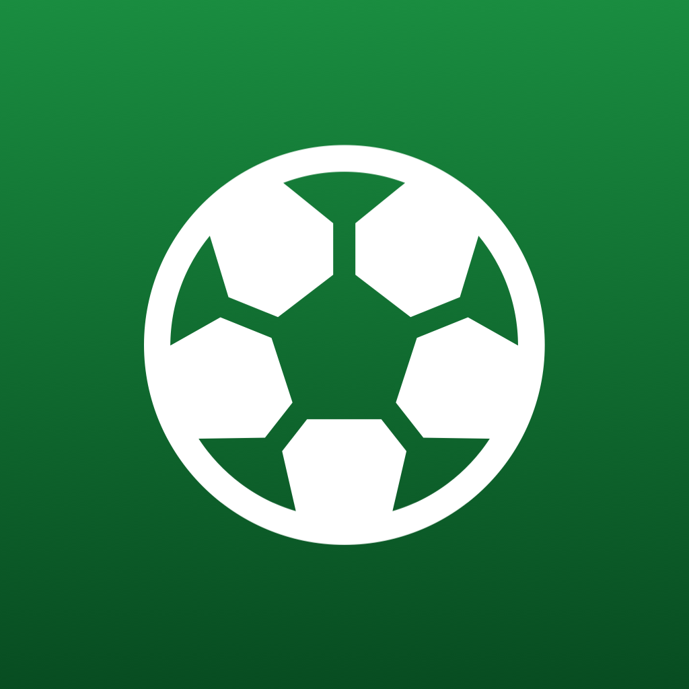
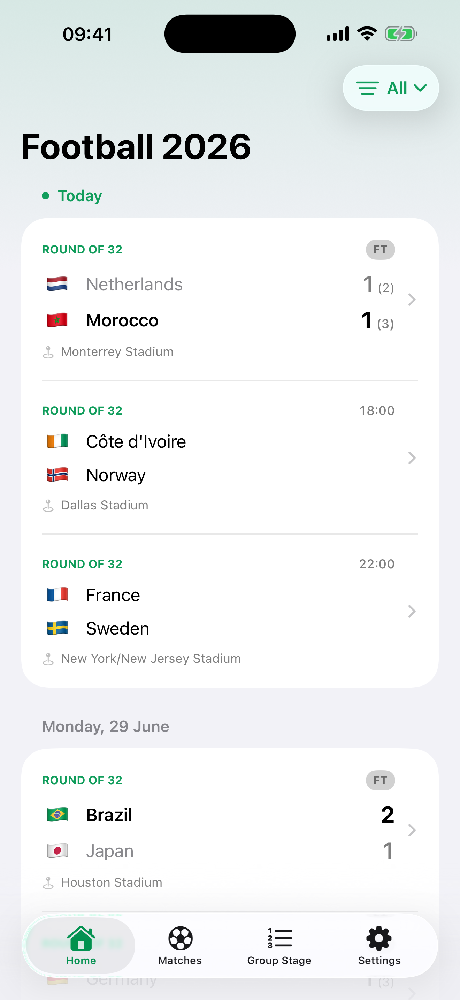
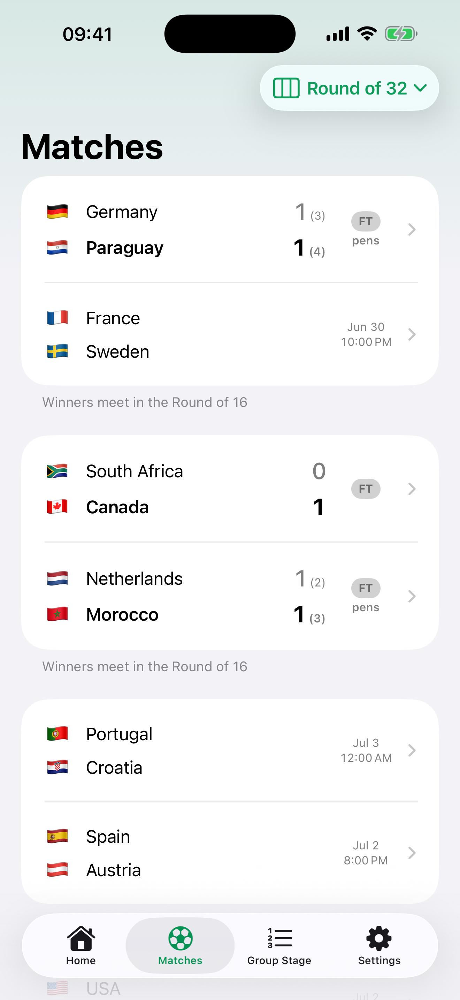
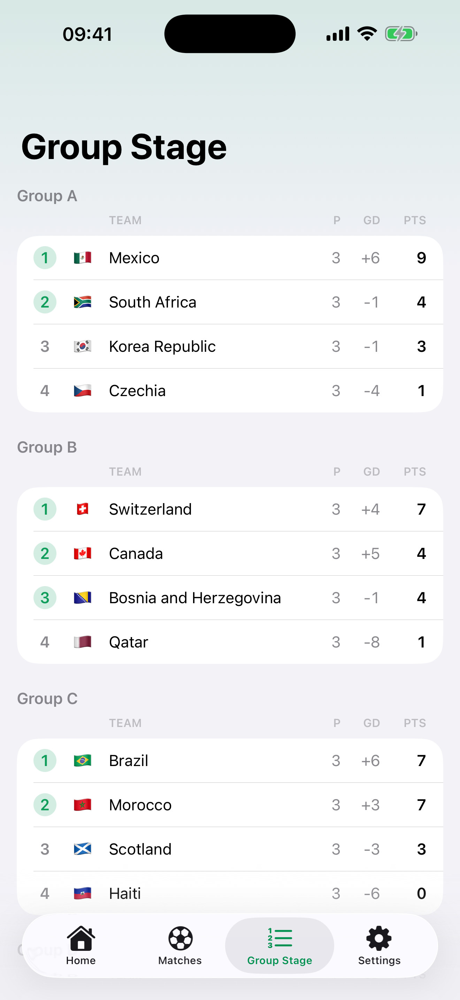
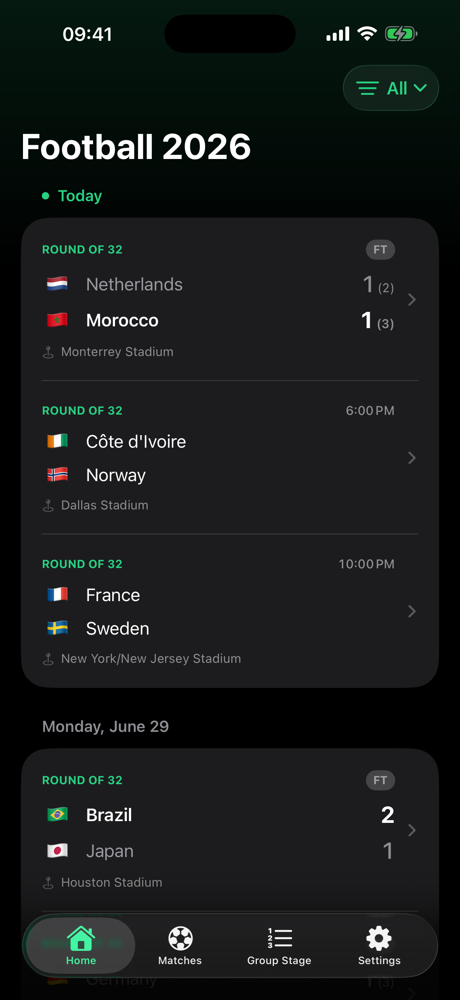
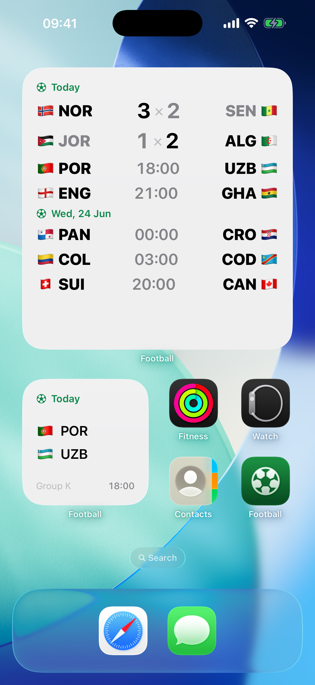
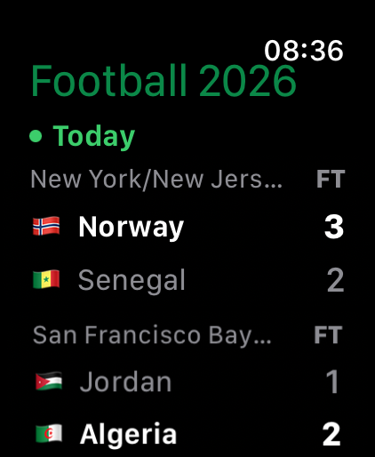

The full knockout bracket
A dedicated Matches tab lays out every knockout round, from the round of 32 to the final, filling in as teams advance. Ties decided in extra time or on penalties are marked, with the shootout score.

Just FootballThe 2026 tournament, nothing else.
All 48 teams. All 12 groups. Every one of the 104 matches — the full knockout bracket, group tables, and live scores on your iPhone and Apple Watch.
No ads. No accounts. No tracking. Just football.

Built for the one tournament that matters this summer.
A dedicated Matches tab lays out every knockout round, from the round of 32 to the final, filling in as teams advance. Ties decided in extra time or on penalties are marked, with the shootout score.
The Group Stage tab keeps every group's standings current — played, goal difference, and points — so you always know who's on course to go through.
Pick a favorite in Settings and the whole app takes on its flag's color as the accent — and it carries across to your Home Screen widget and Live Activity too.
Matches are flagged the instant they start, with a running match clock and final scores the second the whistle blows. Live games float to the top.
Live scores and goals refresh on their own while a match is in play. No pull-to-refresh, no waiting.
Tap any match for its full timeline — scorer, minute, and penalty or own-goal markers — across every stage from the groups to the final.
Every kickoff is shown in your local time. Matches are grouped by day, today is pinned, and completed days read latest-first.
Three sizes — flag, country code, and score per team. Follow today's fixtures or a team you love, with group letters during the group stage. They refresh on their own.
Track a match in play right from the Lock Screen and Dynamic Island, with the live score and match clock. Tap to jump straight to the match.
Glance at the schedule and live scores on Apple Watch — with the same extra-time and penalty result notes you see on your phone.
The full schedule lives on your device and refreshes when you open the app — so it's ready even when the signal isn't.
A section switcher and filter chips that feel right at home on iOS 26. Light and dark mode, localized in English and Brazilian Portuguese.
iPhone, Apple Watch, the Home Screen, and the Lock Screen.





Just Football collects nothing. No analytics, no tracking, no third-party SDKs, no account to create. The app only downloads the public tournament schedule and caches it on your device.
“No ads. No authentication. No tracking. No pink football boots. No soccer. Just football.”
Read the privacy policy →Free on the App Store. iPhone and Apple Watch.
Download on the App Store